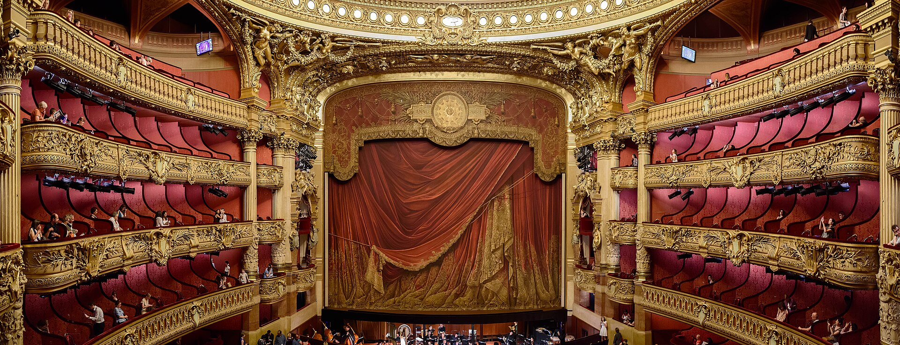
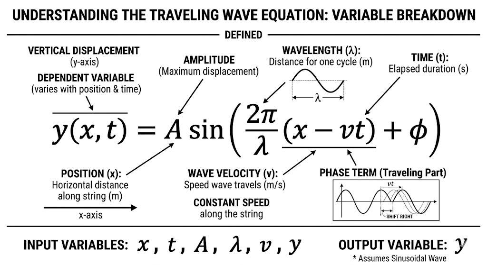
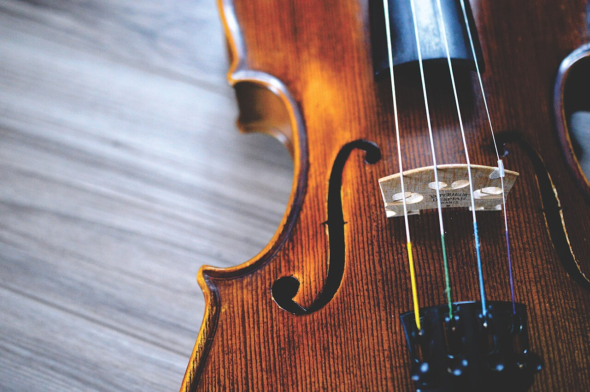

You are sitting in the most majestic and beautiful theater in your town. The main light dimmed and the one spotlight centered on the, for moment, empty chair. The viewers focused their sight on the stage, getting ready to be amused. The show starts… Hearing the heartbreaking melody gives you goosebumps, you might wonder why?

Well, math is the answer. While you enjoy the melody “silent” mathematical problems are happening all around you. Every elegant move of violinist’s hand and every note he plays is controlled by the principle of math. Musicians practice for years to build muscle memory to “hit” the right pitch that needs to be accurate within a micrometer. This is where both fields merge into a single thing. As we know music is nothing without the aesthetic, the same with math. His aesthetic lies in visual symmetry of every angle you draw, every right equation you solve and seeking for right formula to get clear solution.
In this essay I will reveal what is hiding behind the scenes of music, where there is more math than might be expected. The real question we are chasing is this: what exactly is that feeling- and can we recreate it from scratch using only numbers?
To answer that question, we need to start at the very beginning. What is actually happening when the bow touches the string? When the bow touches string they produce tiny, invisible for our eyes, waves. Those waves spread across the room, but the room is not empty right? They undergo diffraction process, which consists of waves bending around obstacles. For instance, you are sitting at the last row. Waves navigate their way to get to you through bending around the heads of people in front of you. That’s why your seat is important. By the time they reach the last row they have fought with every obstacle on their way.
So now we know how the wave travels to us. But what gives each note its unique character? That is where sin and cos come in. If you are new to math, imagine them as brothers. They are almost identical, but they have a difference in their “behavior”. Cos is the coolest and the selfish one, while sin is the kindest and altruist. If you don’t understand fully look at their formulas in trigonometry. For example, let’s look at the angle addition formulas. (pic.1)
Here we can prove that for cos himself, he always comes first, and even if he added his brother at the end he was like “you won’t get away with it easily” and gave opposite signs. Meanwhile sin made it fair, shared his angles with brother and gave right signs making it clear and simple.
So, how do they really look like with their “specific” shape. Here comes the second fact of their distinguishes, the starting point. Starting points also represent their “personalities”. If we look at the graph (pic.2), we can see that cos is already starting at very top, while sin starts just from zero.
In music, this starting point does not affect the melody it produces, that means it does not matter if we are using cos or sin, it keeps the same melody as long as its frequency and amplitude are the same. What truly matters is that it is not created of a single wave, but a sum of many waves. A string vibrates in different way, making a combination of frequencies called harmonics. These harmonics control the outcome tone of the instrument. The Fourier Transform explains this perfectly- it says we can break down any complex sound into cos or sin waves.
As a result we can say, that if we are in math lesson the difference between them matters, and if in music class they are the same. This is essential for better understanding how sounds work.
Now that we understand the shape and behavior of these waves, we can do something remarkable- describe them with a single formula, you can see it at picture 3.
These formulas are essential for our problem solving, let’s get more familiar with it. “A” stands for amplitude, it means the highest point of the wave. Frequency is for describing how often the same pattern repeats itself over a specific amount of time, also it can be measured in hertz (Hz). Phase shift is simply a horizontal slide of the entire wave.
Now let’s get to calculations. Imagine a violinist plays a perfect A4 note (440 Hz) and he wants to find where the string is exactly 0.001 seconds after the bow starts moving, we need to write it like this: A=1mm f=440 Hz t=0.001s and the phase is 0 because like we said in real world application the starting point doesn’t matter.
Now we need to put these numbers into formula above (pic.3), A for A, f for f and etc. Should look like this:
y= 1*sin(2*pi*440*0.001+0)y= sin(0.88pi)Ta dam! We solved our first problem. Feels easy right? It was the beginning now we are moving on a little difficult problem.
Robot is playing a normal note (440 Hz), but needs to add a second harmonic for breathtaking harmony melody. To help him we need to find the total displacement (y total)
The equation looks a little bit different, because we need to sum first with second.
find the solution for 1: y1=1*sin (2pi*440*0.001)=0.368find the solution for second one: y2=0.5*sin(2pi*880*0.001+pi/4)y2=0.5*sin(1.76pi+0.25pi)=0.5*sin(2.01pi)=0.0157add them together: y total=y1+y2=0.368+0.0157We solved our second problem. You did a great job. This was a little tricky one.
Now that we are masters of solving wave equations, I think it is time to make a bigger step in it and solve more complex problem. Don’t be scared, we can do this!
The equations look like this:
A simple, general function that solves this equation is:
$$f(x - vt) = \frac{2\pi}{\lambda}(x - vt) + \phi$$Thus the equation for our sinusoidal traveling wave is:
$$y(x,t) = A\sin\!\Big(\frac{2\pi}{\lambda}(x - vt) + \phi\Big)$$Here we see new signs, what are they?

In this picture there is a breakdown of every variable we need. The difference between these formulas and the previous is that the new one tells us how the wave travels down the length of the string.
Let’s get to calculations!
When violinist plays the vibration doesn’t stay in one spot it travels back and forth. We need to find the position of the wave at a specific point on the string. Given numbers:
Calculating (x-vt): (0.25-220*0.001)=0.03put it in equation with other numbers: y=1*sin(2pi/0.5*0.03+0)Phew! We did it! Now you are “the master of solving wave length problems”.
Remember our question “can we create that feeling from scratch using only numbers?”- this is where we find out. In these decades technology improved so much, that we can train robots how to play a classical music, impressive. Teaching the robot how to perform can be called “transforming hardware to soft gracefully movements of hardware”, hope you got the joke.
So how does math actually become physical movement? Every joint of the robot arm is controlled by moving it to an exact angle to accomplish task. When we need our 440 Hz, the wave equation helps us to find the exact displacement it needs, and those calculations get converted into a motor angle command. See, our equations we solved earlier can become a real melody!
But here is the fun fact. Most people would think scientist would put every equation for every note manually (including me a year ago), instead the robot makes a lot of attempts in simulation, receiving feedback, the feedback includes if the attempt was right or not. This is how real “training” looks like, make sense right?
If we look back to our equations, we see a lot of variables it needs to control, like velocity or force. This is one of the coolest and convenient applications of those formulas. The closest anyone has come to capturing those goosebump feelings in pure math are the same equations that are stored in robot’s memory. Is it really possible for a robot to replicate it? Even the equations are still unable to provide a solution to that yet.

We started with asking why a melody gives us goosebumps, and we leave knowing the answer is sin/cos waves, a Fourier Transform, and a set of equations a robot can now solve in milliseconds.
Math was never just numbers. It was always the invisible system of every beautiful thing. Next time the melody hits you, you will know what hides behind it.